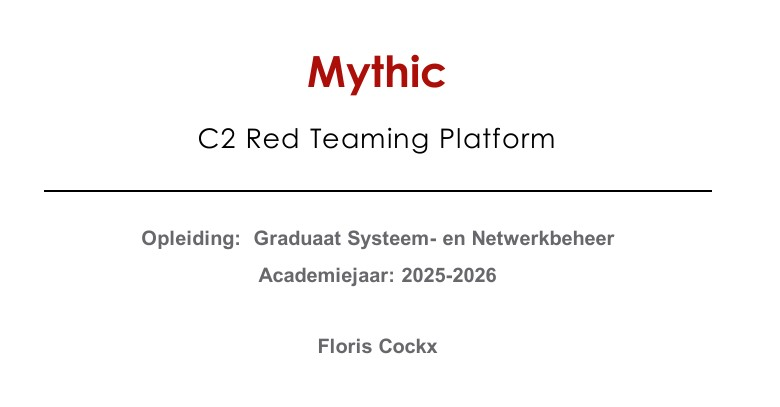

Doel
Het doel was om te begrijpen hoe C2 communicatie werkt en waarom dit belangrijk is binnen cybersecurity.
Project 5
In dit project onderzocht ik Mythic, een open-source Command-and-Control framework dat gebruikt wordt om cyberaanvallen veilig te simuleren.

Het doel was om te begrijpen hoe C2 communicatie werkt en waarom dit belangrijk is binnen cybersecurity.
Ik onderzocht Mythic als red team tool waarmee aanvallen in een gecontroleerde testomgeving nagebootst worden.
Ik kreeg meer inzicht in C2 verkeer, agents, payloads, detectie en de risico’s van zulke tools.
Voor dit cybersecurity project onderzocht ik Mythic. Mythic is een open-source Command-and-Control framework dat gebruikt wordt door red teams om realistische cyberaanvallen na te bootsen in een veilige testomgeving.
Het project ging vooral over hoe een C2-server communiceert met agents op testmachines. Daarbij onderzocht ik hoe opdrachten verstuurd worden, hoe resultaten terugkomen en waarom dit soort verkeer moeilijk te herkennen kan zijn.
Ik leerde dat C2 communicatie de verbinding is tussen een aanvaller en een geïnfecteerd toestel of testagent.
Mythic werkt met payloads die op een testmachine uitgevoerd worden en daarna als agent verbinding maken met de server.
C2 verkeer lijkt soms op normaal netwerkverkeer, waardoor het voor blue teams moeilijk kan zijn om dit betrouwbaar te detecteren.
Omdat Mythic echte aanvalstechnieken simuleert, mag het alleen gebruikt worden in een gecontroleerde en toegelaten omgeving.
Ik maakte een onderzoeksdocument over Mythic en C2 communicatie. Daarbij legde ik uit hoe Mythic werkt met een centrale server, agents en transportkanalen.
Ook beschreef ik de risico’s, de ethische kant en waarom zulke tools nuttig zijn om verdedigingstechnieken beter te begrijpen.
Ik heb geleerd hoe aanvallers via C2 communicatie controle kunnen houden over een systeem en hoe red teams dit op een veilige manier kunnen simuleren.
Daarnaast leerde ik dat cybersecurity niet alleen gaat over aanvallen, maar vooral over begrijpen, detecteren, analyseren en verdedigen.
Cybersecurity inzicht
Onderzoek en analyse
Technische uitleg
Een document waarin Mythic, C2 verkeer en de werking van agents worden uitgelegd.
Een duidelijke uitleg over payloads, agents, beacons en communicatie met de C2-server.
Een overzicht van de risico’s bij verkeerd gebruik van C2-frameworks.
Een korte uitleg waarin het onderwerp op een begrijpelijke manier wordt toegelicht.
Dit project heeft mij geholpen om C2 communicatie en red team tools beter te begrijpen. Ik leerde hoe belangrijk het is om aanvalstechnieken te kennen, zodat je ze later ook beter kan herkennen en verdedigen.
Terug naar portfolio